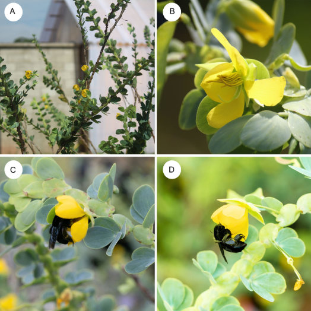
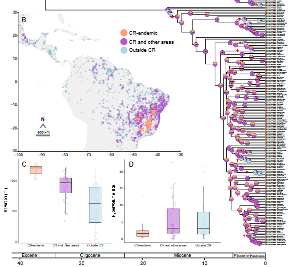
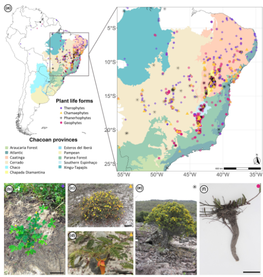
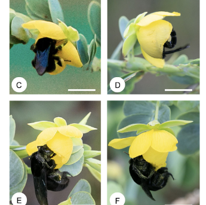
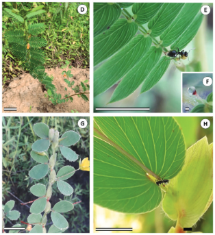

Publicações
Publicações
Os direitos autorais dos artigos pertencem às respectivas editoras. Ao baixar um artigo, você concorda em usá-lo apenas para estudo e pesquisa pessoal, sem fins comerciais, e em não modificá-lo nem distribuí-lo sem autorização das editoras e dos autores.
-
2026

Mota, G.V.; Delgado, T.; Barbosa, B.C.; Nogueira, A. (2026). Locked pollen, unchanged buzzes: Bumblebee foraging behavior persists despite pollen restriction in a poricidal legume. Zealand Journal of Zoology, 53(4), e70070.
-
2026

Nery, E.K.; Rando, J.G.; Prochazka, L.S.; Nogueira, A. (2026). The evolution of endemism within a major legume lineage of the campos rupestres. Annals of Botany, mcag159.
-
2024

Prochazka, L.S.; Alcantara, S.; Rando J.G.; Vasconcelos, T.; Pizzardo, R.C.; Nogueira, A. (2024). Availability and disturbance frequency shape evolution of plant life forms in Neotropical habitats. New Phytologist, 242(2), 760–773.
-
2023

Barbosa, B.C.; Delgado, T.; Mota, G.V.; Nogueira, A. (2023). The role of intraspecific variation in bumblebee body size and behavior on buzz pollination of a tropical legume species. American Journal of Botany, 110(11), e16236.
-
2023

Alencar, C.L.S.; Nogueira, A.; Vicente, R.E.; Coutinho, I.A.C. (2023). Plant species with larger extrafloral nectaries produce better quality nectar when needed and interact with the best ant partners. Journal of Experimental Botany, 74(15), 4613–4627.
Nenhuma publicação encontrada para esta combinação de filtros.